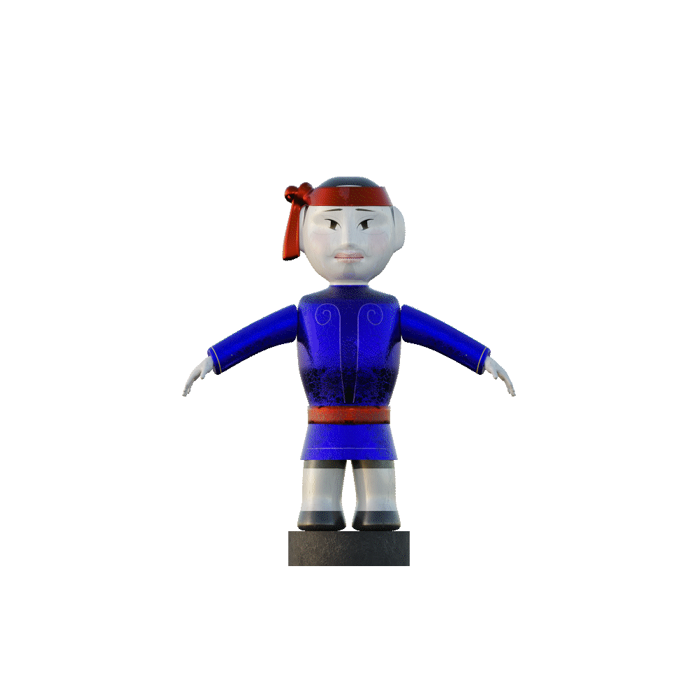

↘ 'Nước Mộng' is a client solution project focused on developing an MVP to address the declining public interest in
traditional art forms, especially among younger generations, which poses a risk to cultural continuity.
While rich in historical and cultural value, these art forms often lack interactivity and accessibility. To better
understand audience needs, we conducted user surveys and used the insights to create an interactive water puppetry
experience enhanced by hand-tracking technology.
The result is an immersive experience designed to re-engage modern audiences and foster deeper appreciation for
Vietnamese traditional arts through active participation.
Trailer



Dragon Boat Design

Stage Design
Rendered in Blender

Animated in Unity
Animated in Unity